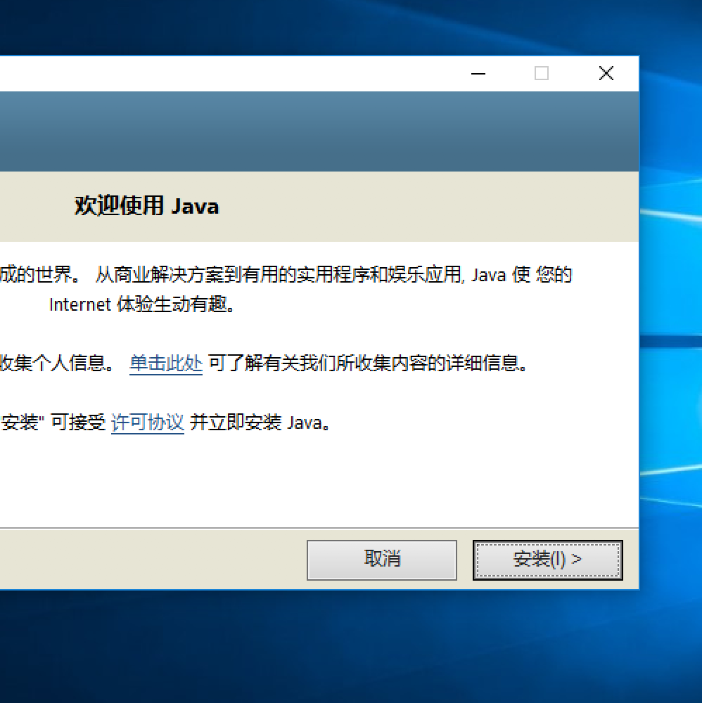
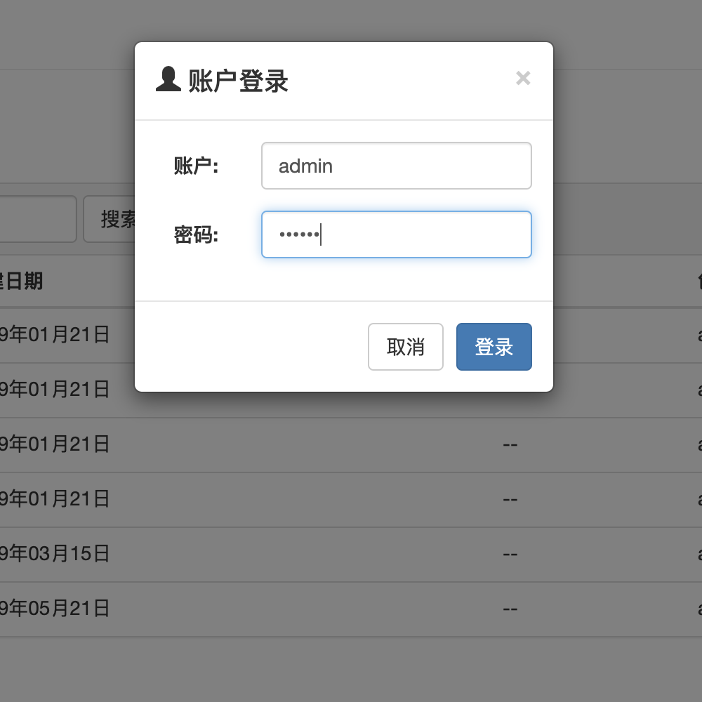

* 提示：您也可以通过点击 示例图片 来查看每一步的详细操作步骤（这些操作步骤适用于Windows和Mac OS X操作系统。如果您需要在Linux操作系统上进行安装，请另外参阅随程序附带的《kiftd说明文档》）。
1.安装JAVA
想要运行kiftd，JAVA运行环境必不可少。安装JAVA非常简单，只需点击几下鼠标即可完成。请先前往
JAVA官方网站 下载一份安装包，之后，双击运行下载好的安装包并“下一步”、“下一步”再“下一步”即可。
为什么要安装JAVA……
查看详细步骤……

2.下载并解压kiftd
当您的电脑中装好JAVA后，便可以安装kiftd了。kiftd的安装过程更加简单——通俗来说就是“解压即用”： 1，
下载kiftd ；2，将下载好的ZIP压缩包解压至本地；3，双击运行其中的 “.jar” 应用程序来启动kiftd；4，点击位于主界面上的“开启”按钮并等待“服务器状态”变为“运行”。就是这样，无需任何复杂操作。
查看详细步骤……

3.开始使用
现在，请打开您的 浏览器 （推荐使用Chrome、Firefox等现代浏览器，如需使用国产高速浏览器，请使用“极速模式”浏览），并在地址栏中输入： http://{您的IP地址（或本机地址127.0.0.1）}:{kiftd端口号}/ （例如“http://127.0.0.1:8080/”）来访问您的网盘主页。之后，请使用初始账户admin（密码：000000）登入系统，开始自由体验kiftd的全部功能！
了解更多……
查看详细步骤……

进一步了解更多内容？
至此，您已经完成了kiftd的基本入门。如果您还需要一份更加全面的功能指引，请阅读随每一份kiftd分发的《kiftd说明文档》。这是kiftd的详细使用说明，其中包括了更加具体的安装流程及各项功能的介绍（图文并茂，示例全面），您可以通过阅读该文档快速学会kiftd的全部使用方法。 相信我，它并不枯燥，无论您是刚刚学会开机关机的小白用户，还是熟练使用命令操作计算机的高级用户，均能很轻松地读懂它！
立即获取……
立即获取……
使用中遇到问题？
如果您遇到问题，欢迎至信kohgylw@163.com，作者会尽快为您解答。